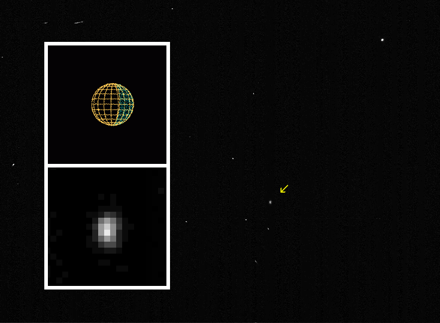
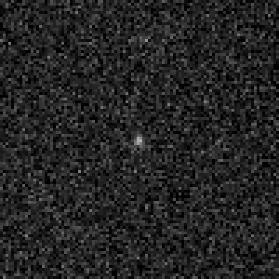
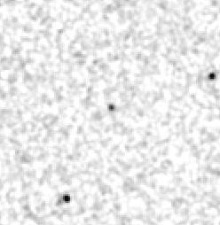
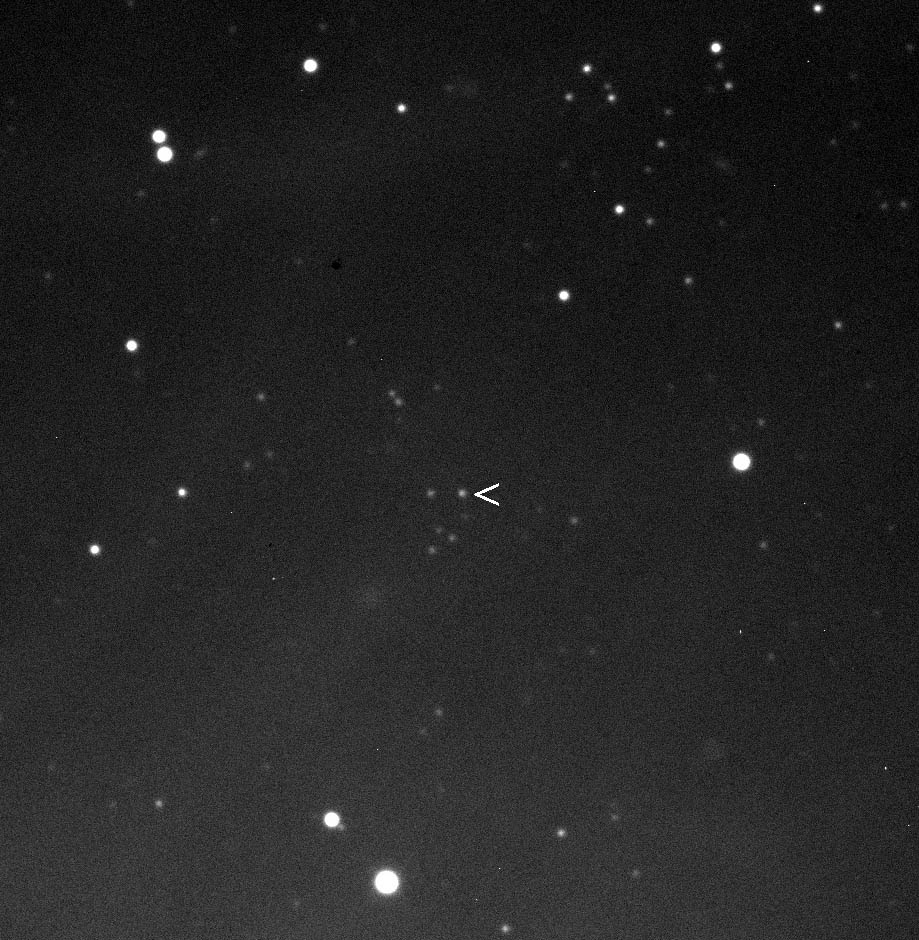

Гималия (от др.-греч. Ἱμαλíα) — один из крупнейших нерегулярных спутников Юпитера, известный также как Юпитер VI.
Обнаружен 3 декабря 1904 года Ч. Д. Перрайном в Ликской обсерватории. Получил своё нынешнее название в 1975 году в честь нимфы Гималии.
Диаметр Гималии составляет 170 км. Плотность оценивается как 3,33 ± 0,47 г/см³ в предположении, что этот спутник сферической формы. Но так как форма спутника неизвестна, эта оценка может быть довольно грубой. Спутник состоит предположительно из преимущественно силикатных пород. Примерно за 10 часов совершает оборот вокруг своей оси. Поверхность очень тёмная, она имеет альбедо 0,04. Звёздная величина равна 14,62m.

Леда (от др.-греч. Λήδα), также известный как Юпи́тер XIII — нерегулярный спутник Юпитера.
Был обнаружен Чарльзом Ковалем 14 сентября 1974 года на фотографических пластинках, которые были экспонированы за три дня до этого в Паломарской обсерватории (с 11 по 13 сентября; Леда была запечатлена на всех). Поэтому официальной датой открытия считается 11 сентября 1974 года. Спутник был назван в честь Леды, возлюбленной Зевса из греческой мифологии. Коваль предложил название, и Международный астрономический союз официально утвердил его в 1975 году.
Диаметр Леды в среднем составляет 20 км. Плотность оценивается 2,6 г/см³. Спутник состоит предположительно из преимущественно силикатных пород. Очень тёмная поверхность имеет альбедо 0,04. Звёздная величина равна 19,5m.

Лиситея (от др.-греч. Λυσιθέα) — спутник Юпитера, известный также как Юпитер X.
Была обнаружена 6 июля 1938 года в обсерватории Маунт-Вильсон американским астрономом Сетом Барнс Николсоном. В 1975 году получила официальное название в честь персонажа древнегреческой мифологии Лисифе.
Диаметр Лиситеи составляет в среднем 36 км. Плотность оценивается 2,6 г/см³. Спутник состоит предположительно из преимущественно силикатных пород. Очень тёмная поверхность имеет альбедо 0,04. Звёздная величина равна 18,3m.

Элара (от др.-греч. Ἐλάρα) — нерегулярный спутник Юпитера, известный также как Юпитер VII.
Был обнаружен астрономом Чарлзом Перрайном 2 января 1905 года в Ликской обсерватории. Назван в честь персонажа греческих мифов Элары, возлюбленной Зевса. Официальное название получил только в 1975 году.
Элара имеет диаметр в среднем 86 км. Плотность оценивается 2,6 г/см³. Предположительно состоит из силикатных пород. Поверхность очень тёмная, альбедо составляет 0,04. Звёздная величина равна 16,3m. За 12 часов совершает оборот вокруг своей оси.